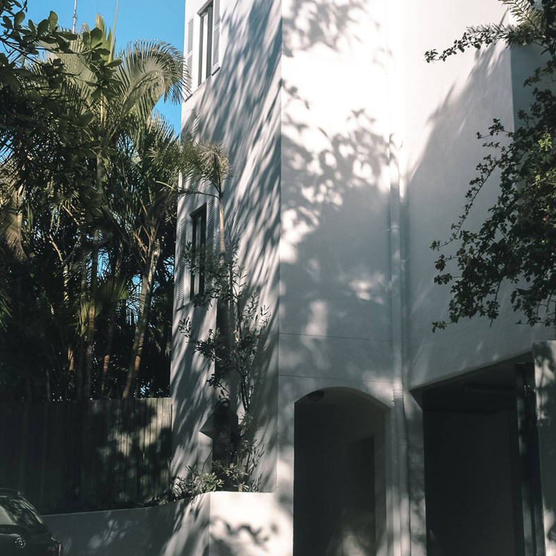
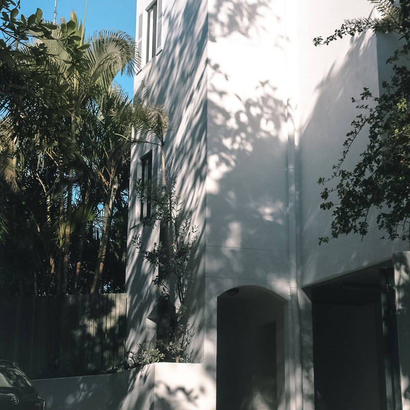
 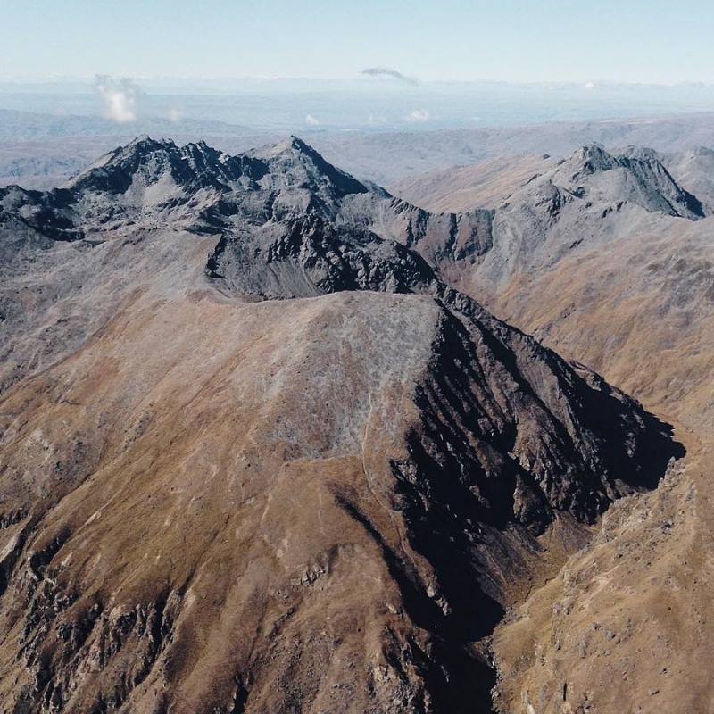
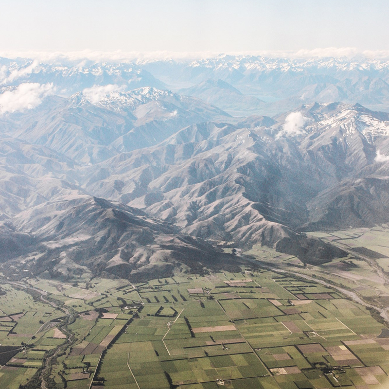
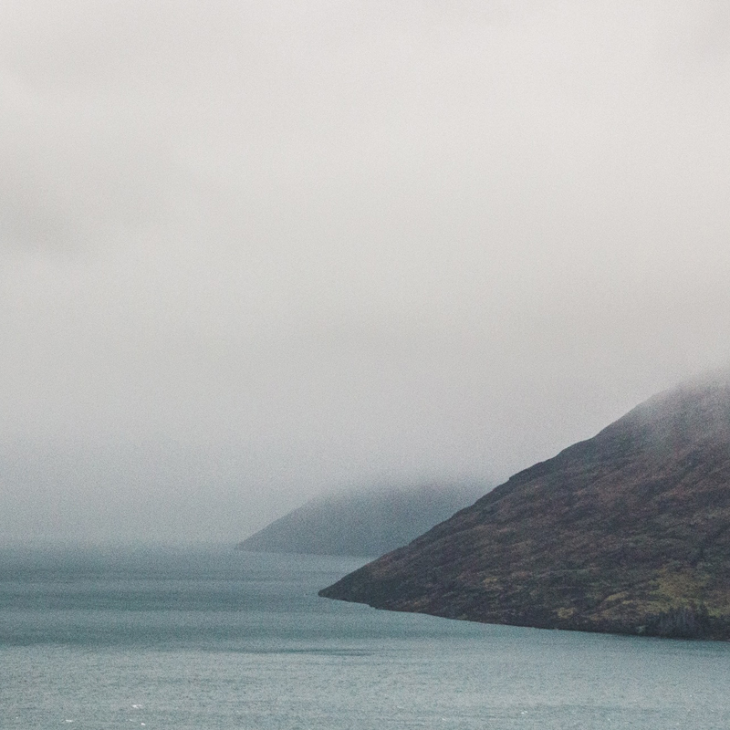
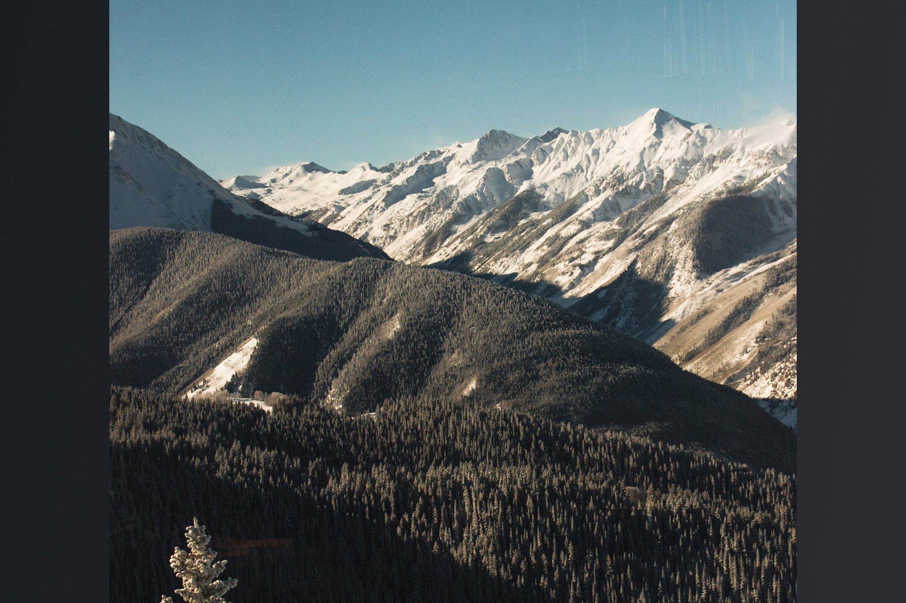
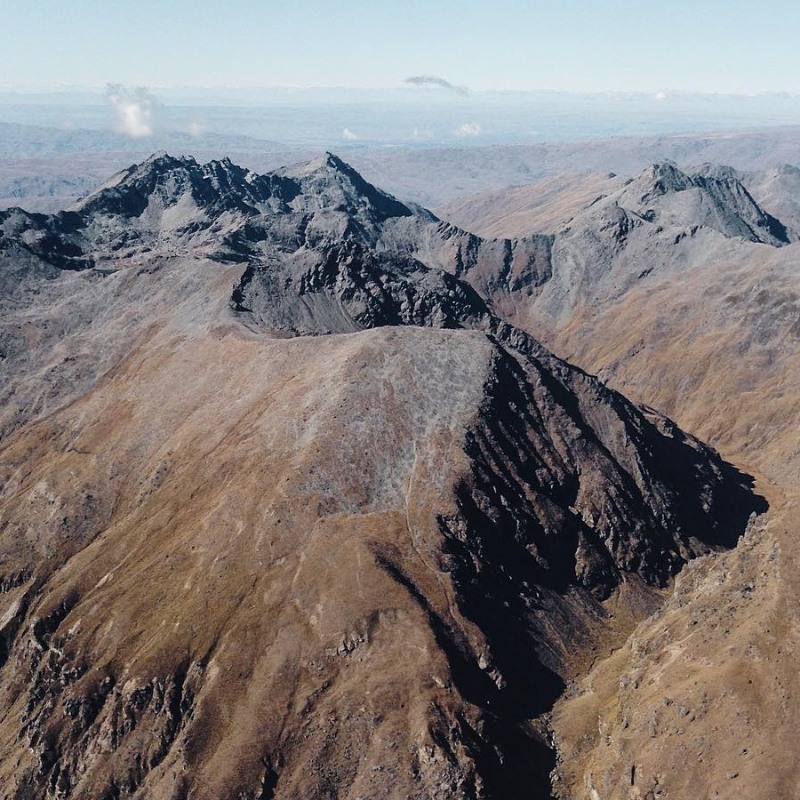
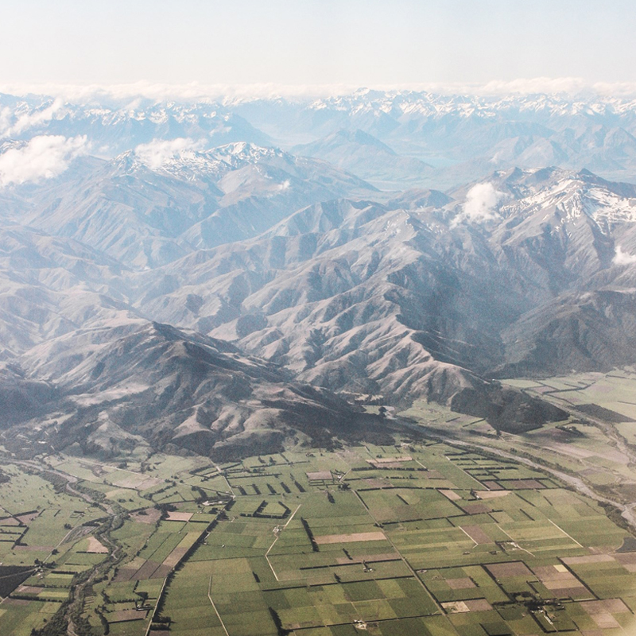
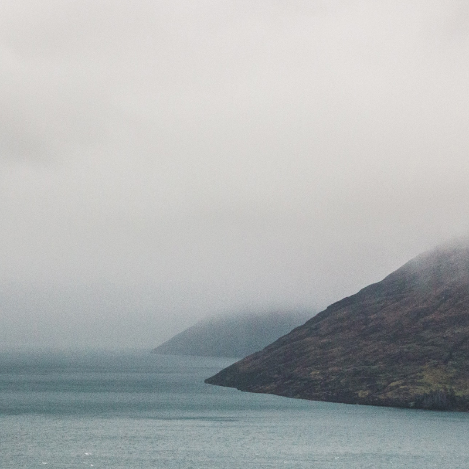
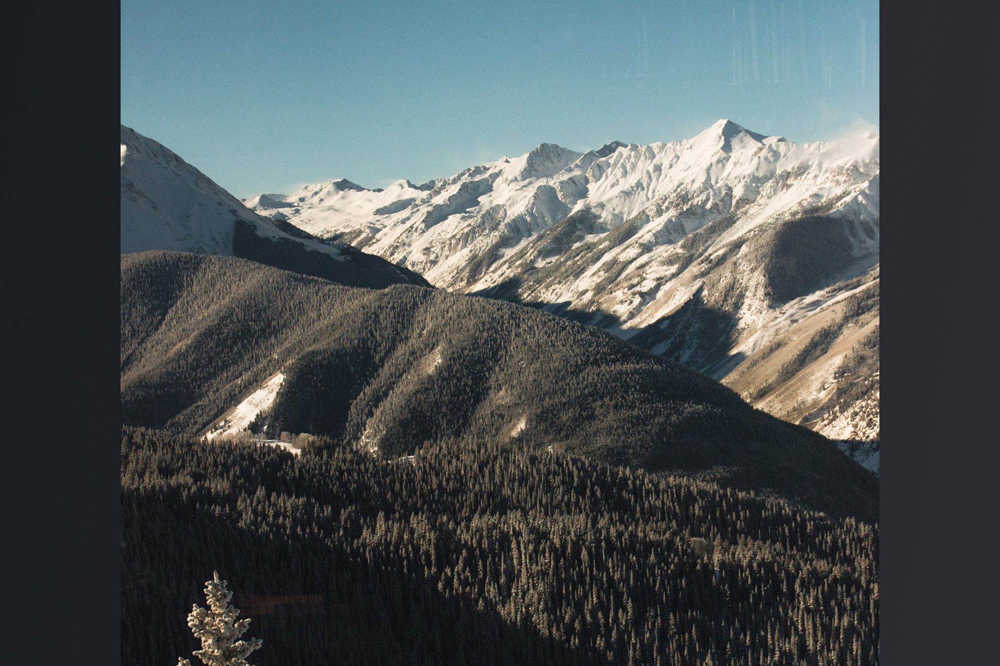
Hi! my name is Hugo Wallace and i'm a freelance photographer from Queenstown, New Zealand. New Zealand is one of, if not the most, beautiful place on earth, and I appreciate this and like to capture New Zealand's pristine image and beauty in my images. I pride my work on the work that happens around me. I will go out for a walk with my camera and let everything around me do the work, and I don't believe you can do this anywhere else in this world as good as New Zealand. We are surrounded in mountains and I love to capture these, they are very moody and have a presence about them that is very unique. I hope you enjoy browsing my work as much as I did producing it!
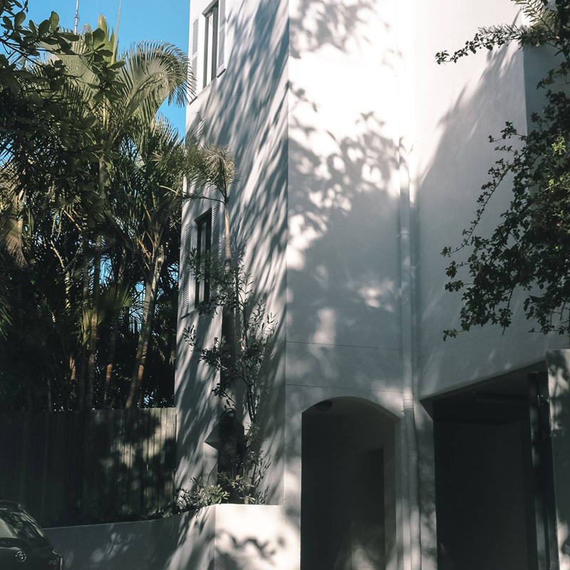
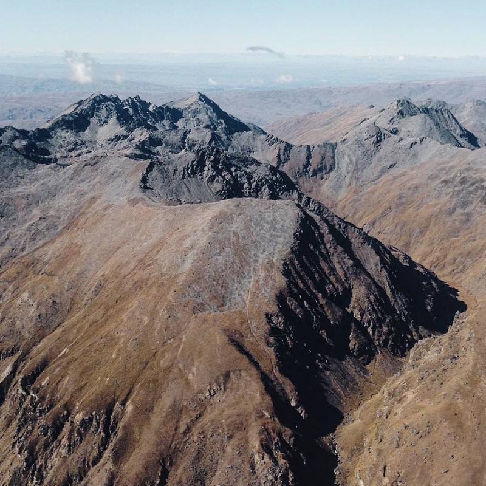
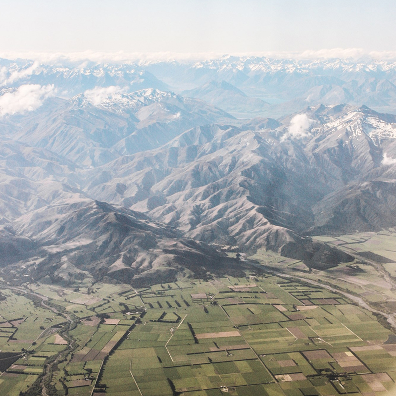
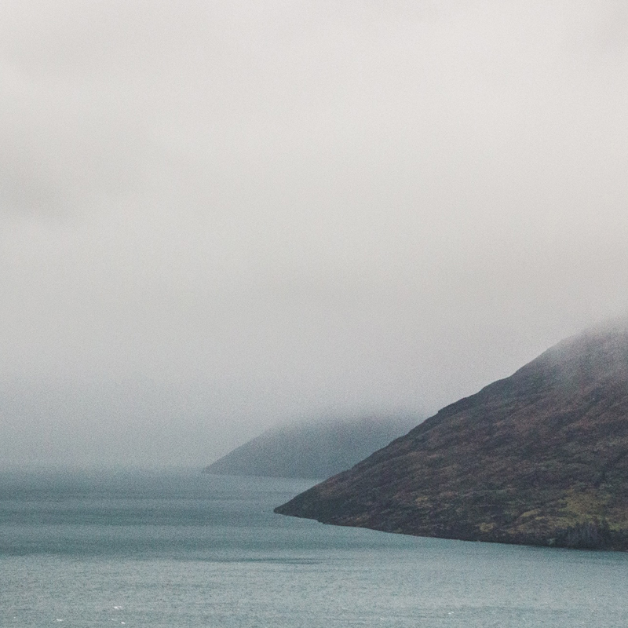
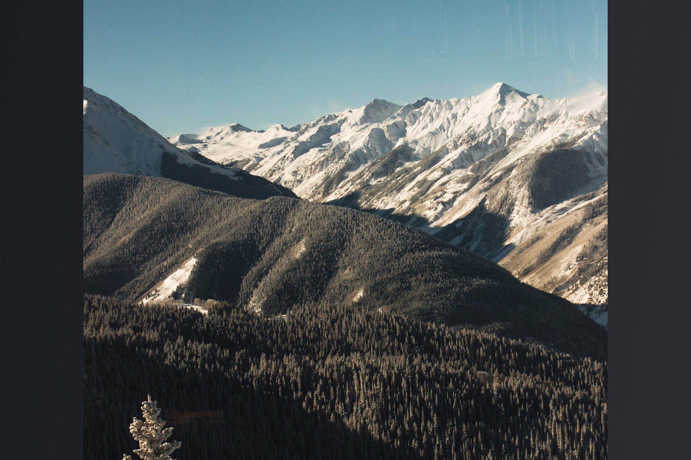